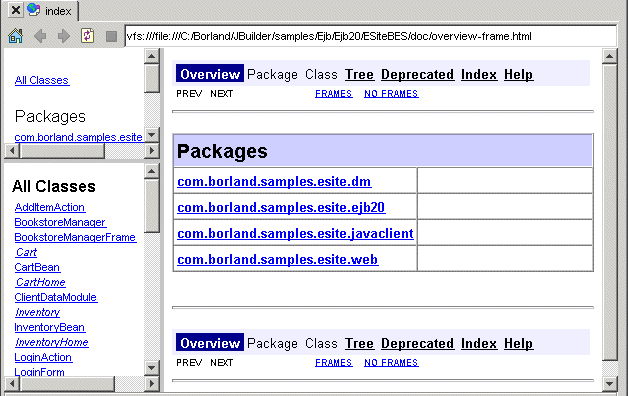

Javadoc features vary by JBuilder edition
Javadoc is a tool created by Sun Microsystems to generate documentation in HTML-formatted files. The generated HTML documentation is derived from comments that you enter into your API source files.
JBuilder includes a number of features to support Javadoc generation. A wizard creates a documentation node that holds properties for a Javadoc run. This node is displayed in the project pane. Javadoc can be generated each time you compile your project, using the current properties.
JBuilder also includes these other Javadoc-related features:
@todo tags to your code@todos
For more information, see:
Building Applications with JBuilder: Creating Javadoc from source files